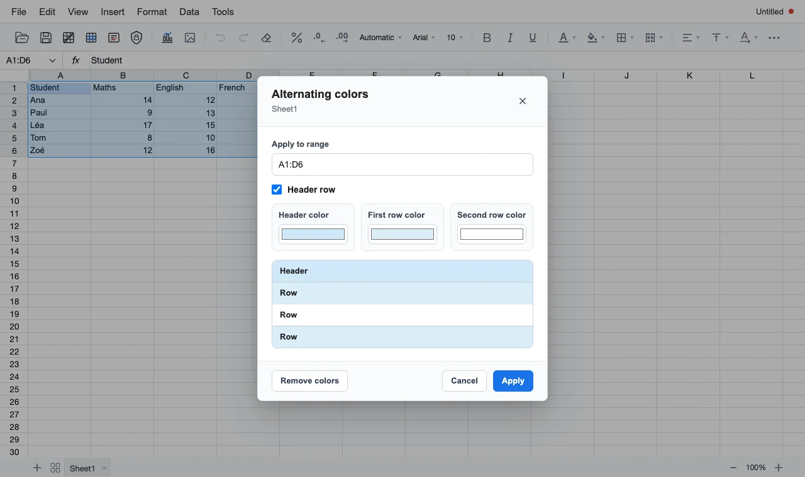

Formatting
Text
| Command | Access |
|---|---|
| bold, italic, underlined | ; Ctrl B, Ctrl I, Ctrl U |
| font | Arial list: thirteen fonts |
| size | 10 list, or Format › Font size: 9 to 72 |
| text color, fill color | |
| clear the formatting | , Format › Clear Format |
In a color palette, Reset color removes it; CUSTOM opens the system's color picker.
While a cell is being edited, the formatting applies to the selected part of the text.
Alignment
| Command | Choices |
|---|---|
| horizontal | left, center, right |
| vertical | top, middle, bottom |
| rotation | tilted, vertical, stacked |
| wrapping | Overflow: over the empty cells nearby; Wrap: on several lines; Clip: cut at the border |
With no alignment chosen, numbers and dates are on the right, the rest on the left.
Borders
draws the chosen border; its arrow gives the sides (top, outside, inside, all, none, diagonal), the color and the style of the line. Choose color and style before the side.
Merging
or Format › Merge cells:
| Command | Effect |
|---|---|
| Merge all | a single cell, which keeps a single content |
| Merge Vertically | one cell per column |
| Merge Horizontally | one cell per row |
| Unmerge | gives the cells back |
A range that contains merged cells cannot be sorted or filtered.
Alternating colors
or Format › Alternating colors... colors every other row of the selected range, with a header row if wanted. The three colors can be chosen.

They are ordinary fill colors: they do not follow a sort or an inserted row. Remove colors removes them from the range.
Gridlines
or View › Show › Gridlines hides or shows the gray lines, in all the sheets of the workbook. Printing has its own setting.
For a color that depends on the value, see Conditional formatting.